辛未日
初伏第二天
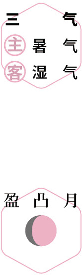
 刮痧
刮痧盛夏｜节气｜ 大暑 ｜时间｜ 七月廿二日至八月七日
今年大暑需特别注意的健康问题：虚汗、腹胀、胸闷、水肿、手足口病
原料：甜杏仁、茴香菜。
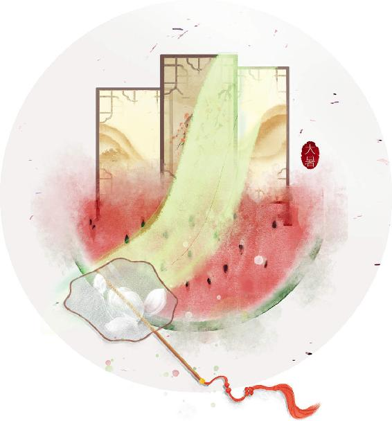
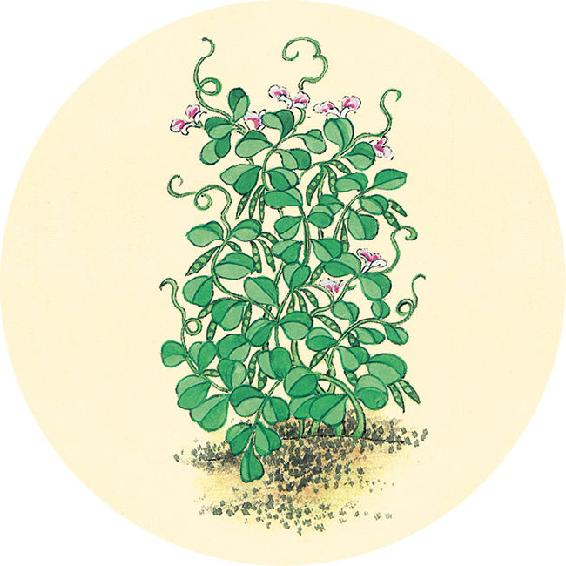
节气食方
杏仁拌茴香
原料：甜杏仁、茴香菜。
做法：甜杏仁用水煮10分钟。茴香菜切碎，加入甜杏仁，以2:1的比例放入酱油和醋拌匀。
注意：拌茴香不要放糖，否则影响功效。要用甜杏仁，不要用苦杏仁（苦杏仁有微毒，入药用）。
功效：预防夏季感冒。
【释义】阴阳的本始，是由五行产生的；而它的产生是有法则的，就是跟随四时变化的规律。
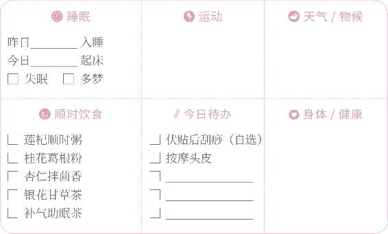

刮痧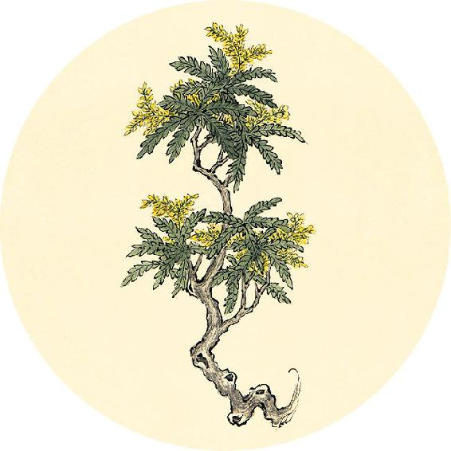
二十四节气茶养生
今年大暑节气品茶推荐：黄芪茶。
进入三伏，人体容易气虚，可喝黄芪补气。湿气重的人可以配荷叶同饮（见8月8日）；若虚汗多、睡眠不好，可以配桑叶同饮。
补气助眠茶
材料：黄芪15～30克、桑叶茶。
做法一：黄芪煮半小时后冲泡桑叶茶。
做法二：黄芪切片，与桑叶茶一起冲泡。
功效：补气、止汗、消脂、助眠。
补泻勿失，与天地如一。
——黄帝内经·素问·脉要精微论
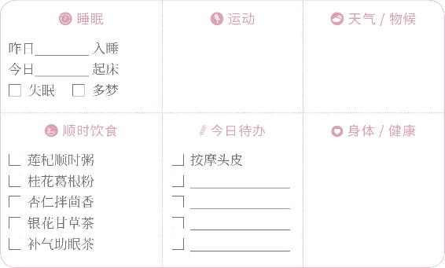
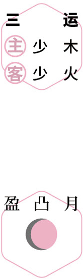
补气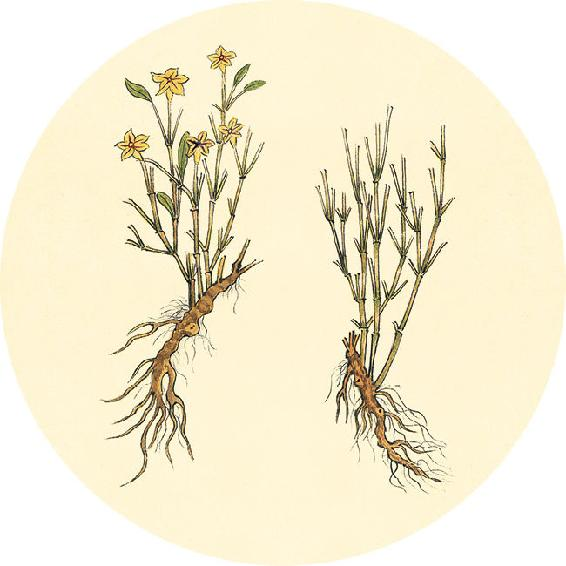
健康提示
为什么三伏要吃黄芪？
黄芪补气的作用仅次于人参，它补的是脾胃之气。
久病大病初愈后体虚的人，或术后调养需进补的人，都可以喝黄芪来促进伤口愈合及身体机能恢复。
黄芪补气还能瘦身，特别是腹部松软的人多喝可以瘦肚子。
适合人群：气虚、肥胖、三高、慢性病、手术后恢复期。
【释义】治病不能偏离四时变化的规律，对脉象要遵照天地阴阳的变化规律来考虑。
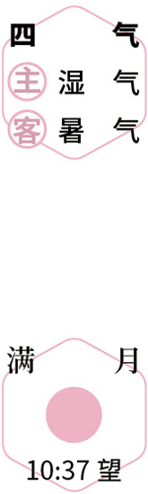
天灸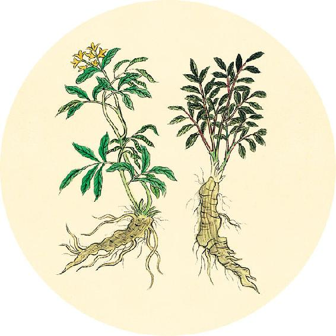
健康提示
大暑节气的养生功课：防暑热。
今年大暑特殊的养生要点——
今年大暑节气，湿热交蒸，人体容易疲乏困倦、出汗多、胸闷气短。
保养重点：心肺。
容易出现的问题：虚汗、腹胀、胸闷、水肿、手足口病。
得一之情，以知死生。
——黄帝内经·素问·脉要精微论
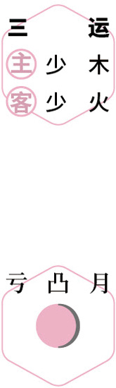
刮痧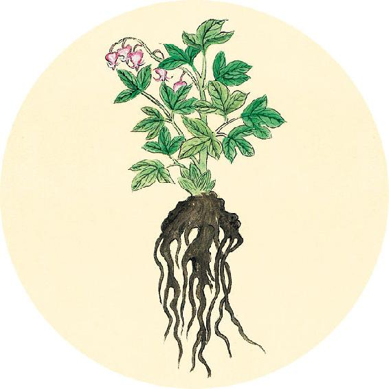
一候反思
贴三伏贴时是否有以下反应：
1. 发冷，怕风。
对策：贴伏当天吃补阳气的饮食（如羊肉、肉桂等）。
2. 困倦乏力。
对策：三伏期间每天吃黄芪。
3. 皮肤发痒。
对策：贴伏第二天刮痧。
4. 皮肤起泡或红疹。
对策：停止敷贴。
【释义】掌握了脉象与天地如一的道理，就可以预知病人的死生了。
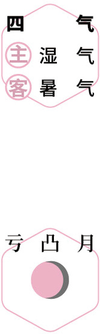
护膝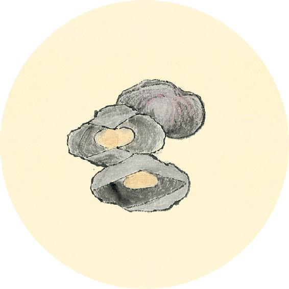
健康提示
天再热，也不要凉了膝盖。薄薄一层衣物就能给膝盖挡风，比直接露皮肤要好。膝盖出现问题，跟平时忽略对膝盖的保暖大有关系。天气越热，膝盖越容易受凉。膝盖比腿部其他部位怕冷。天热，人感觉全身都热，露着腿觉得凉快，不经意间膝盖就受凉了。
特别是在空调房间，露出膝盖，不仅伤膝盖，也可能伤及心，因为心与膝是相通的。
是故声合五音，色合五行，脉合阴阳。
——黄帝内经·素问·脉要精微论
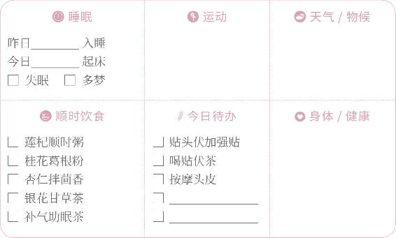
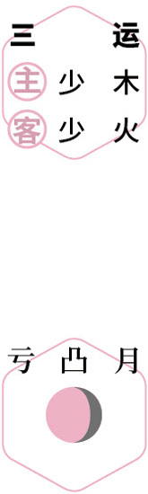
天灸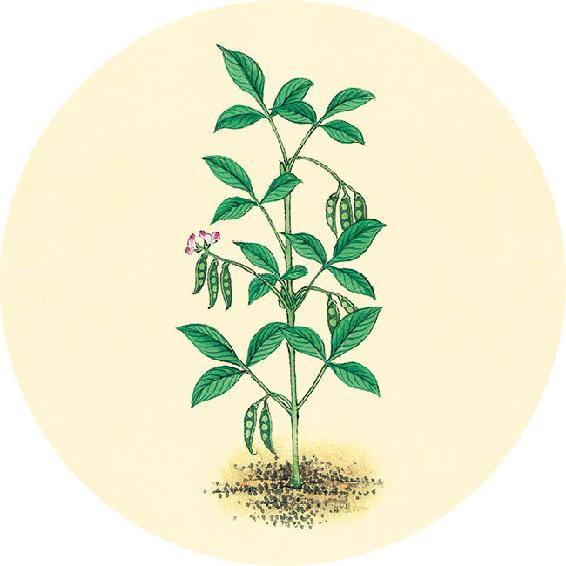
健康提示
从大暑节气开始，进入辛丑岁的第四气（四气），到秋分之前结束。
历时62天（7月23日0:00—9月23日20:00），
主气——湿气；客气——暑气。
今年的第四气阶段，雨水偏多，入秋后早晚凉，白天热，寒湿热夹杂。
保健食方：桂花葛根粉（做法见7月29日）。
【释义】因此，人的声音（呼、笑、歌、哭、呻）与五音（宫、商、角、徵、羽）相合，气色与五行相合（面色青合木，色黄合土，色赤合火，色白合金，色黑合水），脉象与四时阴阳变化相合。
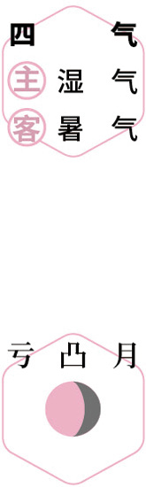
刮痧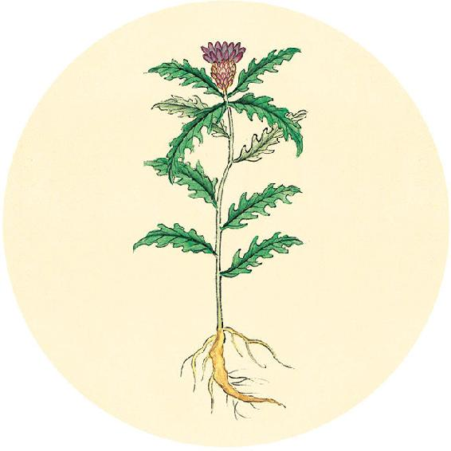
健康提示
辛丑岁四气保健方：桂花葛根粉（大暑、立秋、处暑、白露）
原料：葛根粉、桂花（干品）、枸杞、蜂蜜（糖尿病病人可以用罗汉果甜味料代替）各适量。
做法：
1. 将桂花与蜂蜜拌匀，加入少量开水闷泡，待凉后滤出茶汁。
2. 在一个大碗里放入葛根粉和枸杞，用桂花茶汁将葛根粉调化。
3. 用沸水冲入调化的葛根粉中，搅拌至透明状。
功效：滋阴养血、改善微循环、预防视网膜动脉阻塞、调节女性内分泌、预防骨质疏松。
是知阴盛则梦涉大水恐惧，阳盛则梦大火燔（fán）灼，阴阳俱盛则梦相杀毁伤。
——黄帝内经·素问·脉要精微论
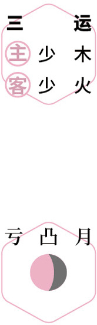
辟蚊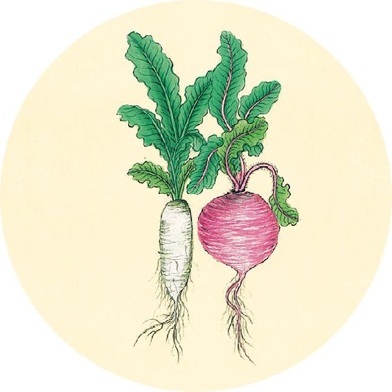
健康提示
明天进入中伏，是贴三伏贴的日子。正好赶上周末，可以上午就开始贴，多贴一些部位。
如果初伏没有贴三伏贴，中伏、末伏仍然可以贴。如果由于上班不能按时贴，或是一次贴感觉太热，可以少贴几个穴位，第二天补贴其他穴位。
三伏贴是养生的方法，有条件能做几次就做几次，贴一次就有一次的效果。
【释义】阴邪过盛会梦见涉渡大水、感觉恐惧，阳邪过盛会梦见大火焚烧，阴阳都过盛会梦见互相残杀。
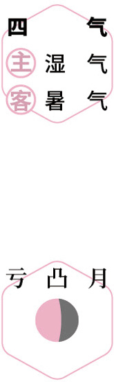
饮梅汤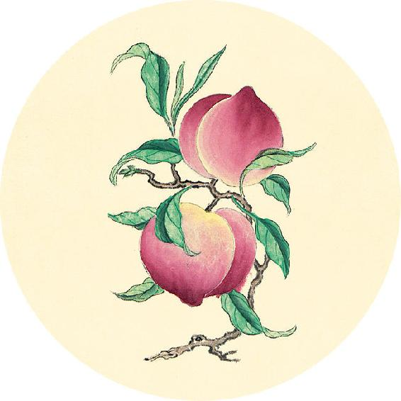
二候反思
是否有以下情况：
□ 急性病期间 □ 皮肤过敏
对策：暂时不贴三伏贴。
□ 正在感冒发热、咳嗽痰黄。
对策：贴清温手心贴（配方见11月1日）。
□ 女性生理期
对策：
1. 不能贴伤湿止痛膏，可以用艾灸贴。
2. 贴前不拔罐，贴后不刮痧。
上盛则梦飞，下盛则梦堕。
——黄帝内经·素问·脉要精微论
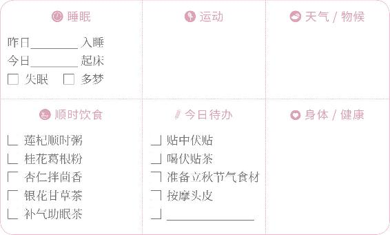
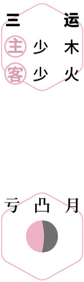
天灸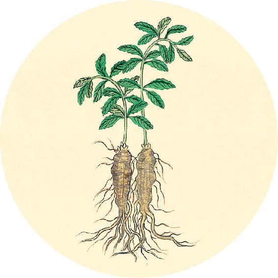
健康提示
在贴三伏贴之后的第二天或第三天，如果感觉贴过的部位发痒，这是局部有风湿造成的，可以在发痒的部位轻轻刮痧，来帮助皮肤排毒。
贴三伏贴部位没有发痒感觉的人，可以不用刮痧。女性生理期也不要刮。
三伏贴是通过皮肤来引毒外出的方法。贴后有的人出现皮肤发红、发痒、起水泡、色素沉着都是正常现象。皮肤娇嫩的人，可以贴的时间短一点。
【释义】病邪在上焦，会梦见向上飞扬；病邪在下焦，会梦见向下坠落。
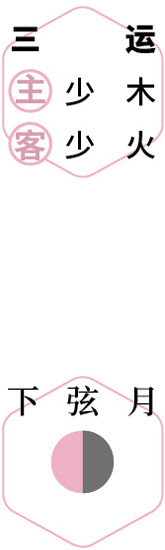
刮痧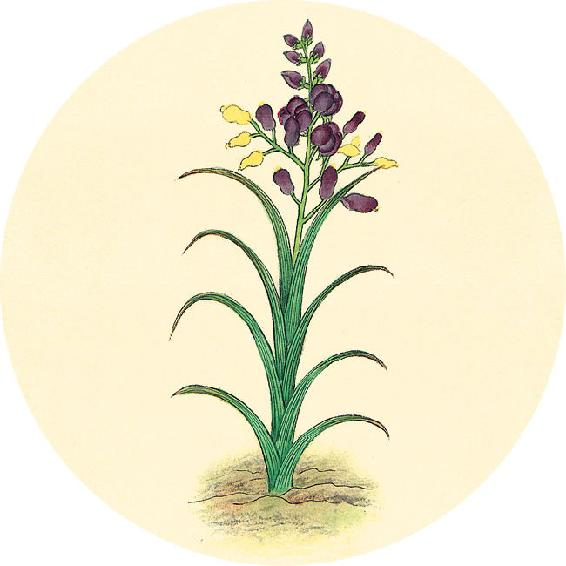
读书
“用九，见群龙无首，吉。群龙无首，文而圣也。”
——马王堆帛书《易之义》
《易经》中乾卦的“用九，见群龙无首，吉”，代表立秋的卦象。
古人夜观天象，看到这个时节天上的龙星（苍龙七宿）开始往地平线下沉，天上只看得到龙星的身体和尾巴，而组成龙星头部的“角”“亢”二宿已沉入地平线下，故称之为“群龙无首”。
甚饱则梦予，甚饥则梦取。
——黄帝内经·素问·脉要精微论
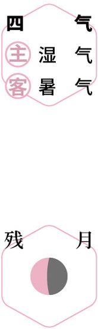
食瓜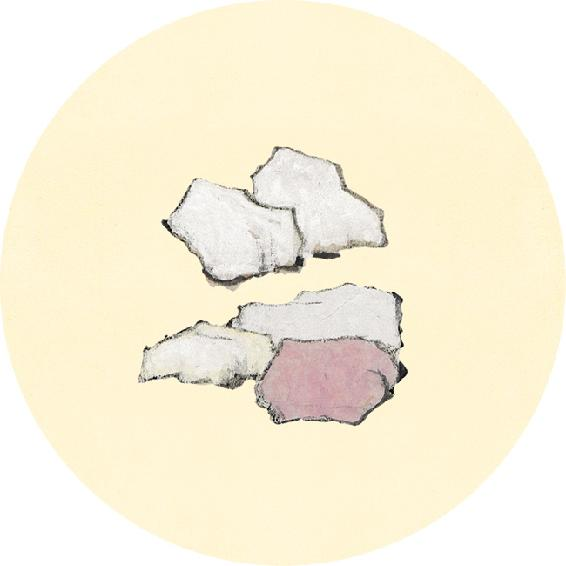
健康提示
为什么立秋不喝凉水？
北方地区有民俗：立秋日，小孩子一天不许喝凉水，这样到冬天不容易咳嗽。
这其实就是代表着秋天到了，别再吃寒湿的东西，免得伤了脾。脾湿则生痰湿，从而引起咳嗽。《黄帝内经》里“秋伤于湿，冬必咳嗽”，说的是同样的道理。
【释义】腹胀会梦见以物予人，腹饥会梦见取人之物。
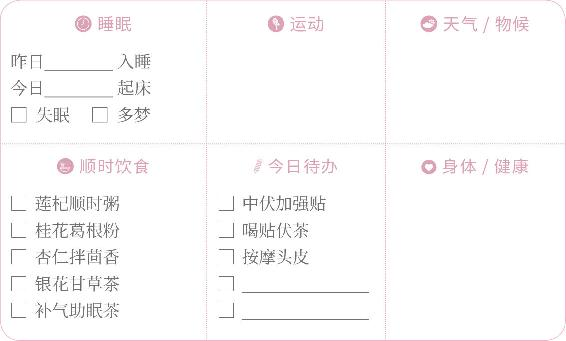
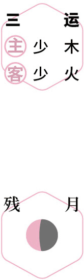
天灸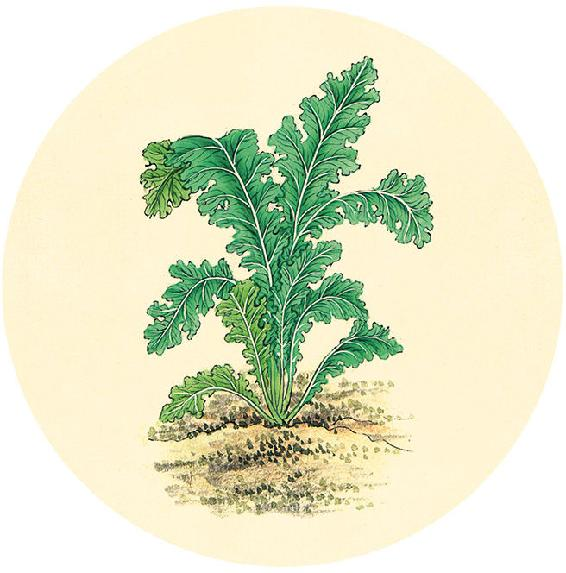
食材准备
三日后立秋。
1. 荷叶粥
原料：新鲜荷叶、陈皮、粥米。
2. 十全大补酒糟鸡（体虚、瘦弱的人吃）
原料：柴鸡、酒酿、油、盐。
3. 辛丑岁四气保健方：桂花葛根粉（从大暑喝到秋分前日，做法见7月29日）
原料：葛根粉、桂花（干品）、枸杞、蜂蜜（糖尿病病人可以用罗汉果甜味料代替）各适量。
4. 辛丑岁三伏茶方：五味茱萸梅子汤（七八月，做法见10月4日）
5. 七夕节相思长生粥
原料：赤小豆、绿豆、花生、大米。
肝气盛则梦怒，肺气盛则梦哭。
——黄帝内经·素问·脉要精微论
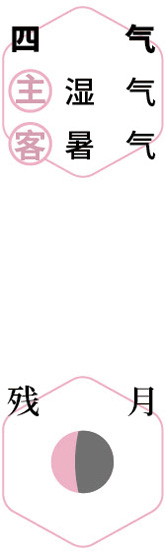
刮痧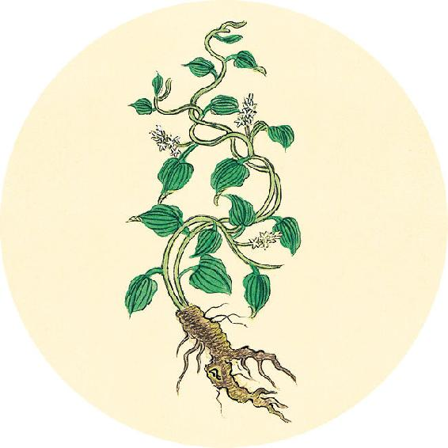
节气总结备
喝银花甘草茶的次数________
喝桂花葛根粉的次数________
吃其他食方的次数________
喝莲杞顺时粥的次数________
贴三伏贴的次数________
身体哪些方面有改善_________________________
明天是夏季的最后一天，古称“绝日”（换季前一天），宜静养。
【释义】肝气盛会梦见发怒，肺气盛会梦中哭泣。
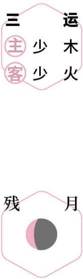
食瓜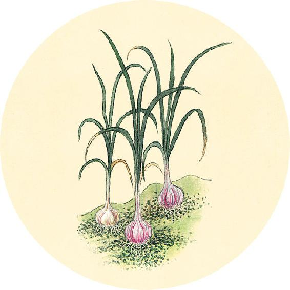
夏季回顾
6个节气中有________个节气坚持了节气饮食。
夏季的养生功课还做了（请打钩）：
□ 补气 □ 祛湿 □ 养心
□ 早起床 □ 远离空调 □ 冬病夏治
身体哪些方面有改善______________________________________
是否生过病 □ 是 □ 否
我给自己的夏季养生功课打________分。
短虫多则梦聚众，长虫多则梦相击毁伤。
——黄帝内经·素问·脉要精微论
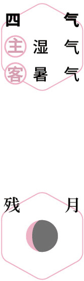
静养